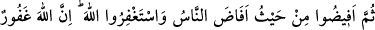

bu anlamdadır.
Âyette “kemâ hedâküm”ün başındaki “kâf” teşbih için değil, takyîd içindir; yâni
zikrin Allah’ın öğrettiği şekilde olmasını, onun öğrettiğinden geri dönülmemesini
anlatmak içindir. Nitekim bizdeki “nasıl öğrettiysem öyle yap” sözü de bu anlamdadır.
Yoksa burada, yukarıda geçen ve Meş’ar-i Harâm yanında zikretmeyi emreden âyetin
tekrârı söz konusu değildir. Birinci zikir emri, zikrin ve vakfenin yerini açıklamakta ve
bu mekâna uygun olan hac menâsikini öğretmektedir. İkinci ile emredilen ise Hak
Teâlâ’ya karşı zikir görevimizin O’nun öğrettiği şekilde kemmiyet ve keyfiyetini
göstermektedir. Bizim size hidâyetimiz ulaşmadan önce îmân ve tâattan haberdar
değildiniz.
Kâşânî diyor ki: Allah Teâlâ önce nefs makamında dille zikretmeyi, ardından kalb ile
zikri öğretmektedir. Kalb ile zikir, aynı zamanda fiilî bir zikirdir, Allah’ın nimet ve
ihsanlarını düşünmektir. Kalbin zikrinin ardından sırrın zikri gelir ki, o da ef’âl-i
ilâhiyyeyi temâşâ ve Hakk’ın sıfatlarının tecellî ilmini mükâşefedir. Sırrın zikrini
rûhun zikri izler. O da zât-i ilâhiyye nûrunu mülâhaza ile sıfat-ı ilâhiyyenin tecelli
nûrlarını müşâhededir. Rûhun zikrinin ardından zâtî şühûd makamı demek olan zâtın
zikri gelir. Kul bu duruma gelince kendisine, siz bu makamlara erdirilmeden bunların
hiçbirinden haberdar değildiniz, denilir.
İfâzayı; yâni gruplar hâlinde Arafat’tan ayrılmayı yerine getirince zikr-i ilâhî emrinin
akabinde tekrar insanların gruplar hâlinde yoğun bir biçimde yollara düşmeleri
emredilerek şöyle buyrulmaktadır:
199. “Sonra insanların (sel gibi) aktığı yerden siz de akın. Allah’dan mağfiret
isteyin. Çünkü Allah affedici ve esirgeyicidir.”
Burada sel gibi akma emri Müzdelife’den değil, ama Arafât’tandır. Çünkü “Hums”
diye anılan Kureyş ve müttefikleri vakfeyi sadece Müzdelife’de yapıyor: “Biz
ehlullahız; Allah’ın has kullarıyız. O’nun Harem’inde oturanlarız. Harem’den dışarı
çıkamayız.” diyorlar ve Arafât’ta insanlarla vakfe yapmayı kendileri için küçüklük
sayıyorlardı. Çünkü Arafât, “hill” bölgesiydi (helâl bölgeydi). Harem bölgesinin
dışındaydı. Diğer Araplar ise İbrâhîm (a.s)’ın dinine ittibâ ederek Arafât’ta vakfe
yapıyorlardı. İnsanlar sel gibi Arafat’tan gelince, Kureyş ve yandaşları Müzdelife’den
çıkıyorlardı. Allah Teâlâ, Kureyş’in tavrıyla ilgili bu âyeti indirerek Arafât vakfesini
emrettiği gibi, Arafât’tan çıkışında diğer insanlarla birlikte olmasına hükmetti. Âyette
“en-nâs” kelimesiyle kasdedilen Kureyş ve müttefiki olan “Hums” kabîlelerinin
dışındaki Araplardır.